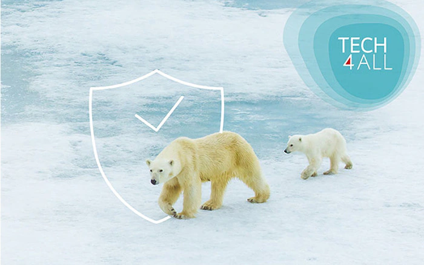
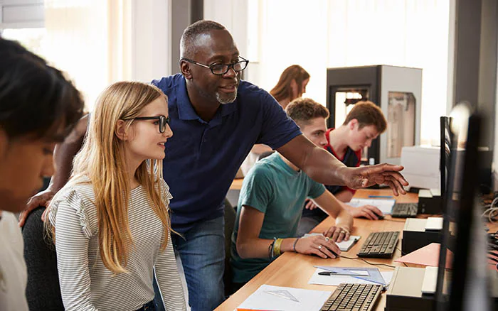
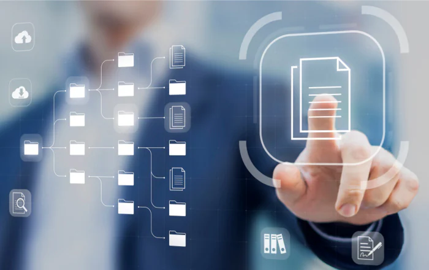

<html>
<title>Huawei Tanıtım</title>
<link rel="stylesheet" type="text/css" href="../genel_bolumler.css">
<meta charset="UTF-8">
</html>


<body>


<div class="navigasyon_bar">

<a href="../index.html" > 
	</img>
	</a>


	<a href="../huawei_hakkında/huawei_hakkinda.html"> <div class="ic_div"> Huawei Hakkında </div> </a>
	<a href="../urunler/urunler.html"> <div class="ic_div"> Ürünler </div> </a>

	<a href="../sürdürülebilirlik/sürdürülebilirlik.html"> <div class="ic_div"> Sürdürülebilirlik </div> </a>

	<a href="../eğitim/egitim.html"> <div class="ic_div"> Eğitim </div> </a>
	<a href="../haberler/haberler.html"> <div class="ic_div"> Haberler </div> </a>

</div>


<!----------------------------------------------------------------------------->


<div class="sidebar" tabindex="0">
  <div class="side_liste">

    <div class="side_sol_liste ">
      <ul>
       <a href="https://www.huawei.com/en/events/huaweiconnect?utm_source=chatgpt.com"> <li> 
 18.09.2025</li></a>
        <a href="https://www.huawei.com/tr/news/2025/huawei-ict-day-2025te-endustriyel-donusumun-yol-haritasini-paylasti"><li>
 18.04.2025</li></a>
        <a href="https://solar.huawei.com/en/news/2025/huawei-digital-power-drives-huawei-connect-europe-fusionsolar-partner-summit-europe-2025/?utm_source=chatgpt.com"><li>
05.11.2025</li></a>
      </ul>
    </div>

    <div class="side_sag_liste ">
      <ul>
        <a href="https://www.huawei.com/tr/news/2023/huawei-connect-etkinliginde-basarili-bulut-uygulamalari-paylasildi"><li>
2023.11.17</li></a>
        <a href="https://www.tahawultech.com/news/hdc%C2%B72024-huawei-mea-ecosystem-summit-redefining-digital-bridges/?utm_source=chatgpt.com"><li>
21.11.2024</li></a>
        <a href="https://activity.huaweicloud.com/intl/en-us/partner_connection.html?utm_source=chatgpt.com"><li>
24.03.2024</li></a>
      </ul>
    </div>

  </div>

</div>


<div class="surdurulebilirlik_banner">

<h1 class="ana_baslik"> Sürdürülebilirlik </h1>
<p class="ana_paragraf">
Küresel çapta önde gelen bir bilgi ve iletişim teknolojileri altyapısı ve akıllı cihaz sağlayıcısı olan Huawei, bilgi ve iletişim teknolojilerinin BM Sürdürülebilir Kalkınma Amaçlarına ulaşmada ve insanlığın refahını ilerletmede kritik bir rol oynadığına inanmaktadır.
</p>
</div>


<h1 class="baslik"> PAYLAŞ - Herkes İçin Dijital Bir Gelecek </h1>

<p class="paragraf">
Huawei, insanlığın karşı karşıya olduğu sürdürülebilirlik sorunlarına yeni çözümler bulmak için teknolojik yeniliklerden yararlanmaya kararlıdır. Sürdürülebilir Kalkınma Amaçlarına (SDG'ler) katkıda bulunma çabalarımızın temelinde, dört sütundan oluşan SHARE konseptimiz yer almaktadır: dijital kapsayıcılık, güvenlik ve güvenilirlik, çevre koruma ve sağlıklı ve uyumlu bir ekosistem.
</p>


<h1 class="baslik"> Stratejilerimiz </h1>
<p class="paragraf"> 
Sürdürülebilirlik, Huawei'nin kurumsal stratejisinin önemli bir parçasıdır; bu nedenle dört sürdürülebilirlik stratejimizde ilerleme kaydetmeye devam ediyoruz: dijital kapsayıcılık, güvenlik ve güvenilirlik, çevre koruma ve sağlıklı ve uyumlu bir ekosistem. Bu çabalar, Birleşmiş Milletler Sürdürülebilir Kalkınma Amaçlarına (BM SKA) ulaşılmasına katkıda bulunacaktır.  
<a href="" >daha fazla bilgi edinin </a>
</p>


<h1 class="baslik"> Girişimlerimiz </h1>

<section class="hero hero-2">
  <video autoplay muted loop playsinline>
    <source src="../videolar/surdurulebilirlik.mp4" type="video/mp4">
  </video>
  <div class="icerik">
   

<div class="divler">
<a href="https://www.huawei.com/en/tech4all">
<div class="div1"> 


<h1 class="div_h1">TECH4ALL </h1>
<p class="ic_p">
BM Sürdürülebilir Kalkınma Amaçları ve Huawei'nin vizyon ve misyonuyla uyumlu olan TECH4ALL, uzun vadeli dijital kapsayıcılık girişimimiz ve eylem planımızdır. Ortaklarımızla birlikte, dünyayı herkes için daha kapsayıcı ve sürdürülebilir bir yer haline getiren teknolojiler ve çözümler geliştirmeye kararlıyız.
</p> 

</div> 
</a>


<a href="https://e.huawei.com/en/talent/ict-academy/#/home">
<div class="div2"> 


<h1 class="div_h1">Huawei OceanProtect Veri Koruma </h1>
<p class="ic_p">
2025 Gartner® Peer Insights™'ta Müşterilerin Tercihi Seçildi.
</p> 

</div>
</a>


</div>


  </div>
</section>


<br><br><br>


<h1 class="baslik"> Yeşil Tedarik Zinciri ve Sorumlu Tedarik </h1>
<p class="paragraf">
Huawei, tedarik zincirindeki karbon emisyonlarını azaltmak için aktif bir yaklaşım benimsiyor:
</p>
<h2 class="baslik"> Tedarikçi Karbon Azaltım Konferansı: </h2>
<p class="paragraf">
2024 yılında 1,000'den fazla tedarikçinin katıldığı 4. Tedarikçi Karbon Azaltım Konferansı düzenlendi. "Yeşil ve Düşük Karbonlu Kalkınma Ortak Başarı İçin" temasıyla gerçekleşen bu etkinlikte, yıl boyunca karbon azaltımında mükemmel performans gösteren 7 tedarikçiye ödül verildi.
</p>
<h2 class="baslik"> Zorunlu Çalışma ve Çatışma Mineralleri: </h2>
<p class="paragraf">
Huawei, tedarik zinciri izlenebilirliği, zorunlu çalışma ve çatışma mineralleri konusunda müşterileriyle bilgi paylaşıyor, IAC (Industry Audit Committee) tarafından düzenlenen ortak denetimlere tedarikçileri öneriyor.
</p>
<h2 class="baslik"> Yeşil Tedarikçi Gelişimi: </h2>
<p class="paragraf">
Tedarikçilerden organizasyonel seviyede karbon denetimi yapması isteniyor, yukarı ve aşağı akış ortakların düşük karbon yeteneklerini geliştirmelerine yardımcçi olunuyor ve değer zincirindeki dolaylı karbon emisyonlarını azaltmak için çalışılıyor.
</p>


<div class="divler">
<a href="https://www.huawei.com/en/sustainability/management">
<div class="div1"> 


<h1 class="div_h1">Sürdürülebilirlik Yönetimi </h1>
<p class="ic_p">
Sürdürülebilir kalkınma stratejilerimizin uygulanmasını desteklemek amacıyla, sistematik yönetim sistemleri kurduk ve Grup düzeyinde Kurumsal Sürdürülebilir Kalkınma Komitesi atadık.
</p> 

</div> 
</a>


<a href="https://www.huawei.com/en/sustainability/sustainability-report">
<div class="div2"> 


<h1 class="div_h1">Raporlar ve Politikalar</h1>
<p class="ic_p">
Huawei, 2008 yılından bu yana her yıl sürdürülebilirlik raporları yayınlamakta ve zaman zaman sürdürülebilirlik inançlarımızı ve uygulamalarımızı açıklayan diğer ilgili raporları ve politikaları da yayımlamaktadır.
</p> 

</div>
</a>

</div>


<br> <br>


<footer class="alt-banner">
	<h1>HUAWEI</h1>

<div class="ustbar">


		<a href="https://www.facebook.com/HuaweiEnterprise" > 
	</img>
	</a>
<a href="https://www.linkedin.com/company/huawei-enterprise" > 
	</img>
	</a>
<a href="https://x.com/HUAWEient" > 
	</img>
	</a>
<a href="https://www.instagram.com/huaweient/" > 
	</img>
	</a>
<a href="https://www.youtube.com/user/HuaweiEnterprise" > 
	</img>
	</a>
	

</div>


<div class="foot_divs">
<a href="https://app.huawei.com/eplus/front/index.html#/download">	
<div class="foot_div1">

Huawei e+ Uygulaması
</div> </a>
<a href="https://app.huawei.com/eplus/soho/front/index.html#/download">
<div class="foot_div1">

Huawei eKit Uygulaması
</div></a>
<a href="https://m.support.huawei.com/intl/prod/enterprisemobile/brochure/index_en.html">
<div class="foot_div1">

Huawei HiKnow Uygulaması
</div>  </a>
<a href="https://app.huawei.com/eplus/smb/front/index.html#/download?countryCode=Global">
<div class="foot_div1">

Huawei eFly Uygulaması
</div> </a>

</div>

<p class="foot">
<a href="https://www.huawei.com/en/contact-us" > Bize Ulaşın </a>
&nbsp;&nbsp;&nbsp;
<a href="https://www.huawei.com/en/legal"> Kullanım Şartları </a>
&nbsp;&nbsp;&nbsp;
<a href="https://www.huawei.com/en/privacy-policy"> Gizlilik Politikası </a> &nbsp;&nbsp;&nbsp;
<a href="https://www.huaweicloud.com/intl/en-us/"> Huawei Bulut </a>

     	<p class="last_foot">© 2026 Tüm hakları saklıdır</p>
    </footer>


</body>